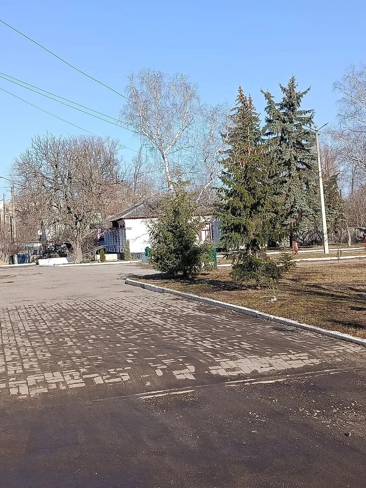
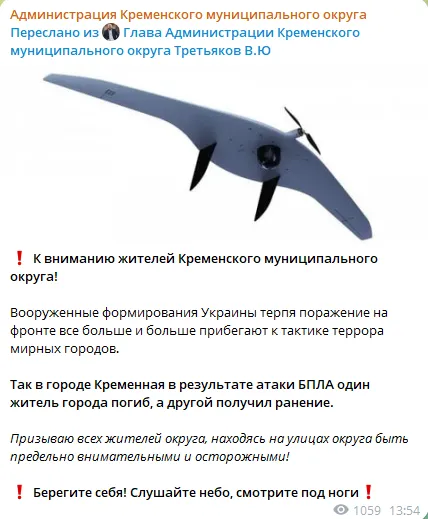
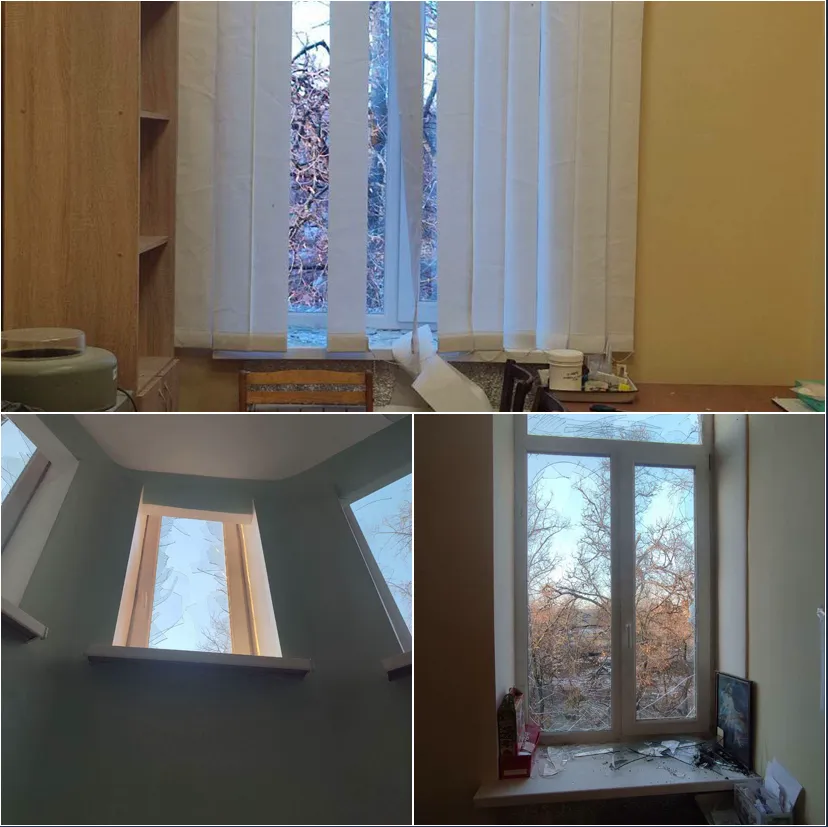
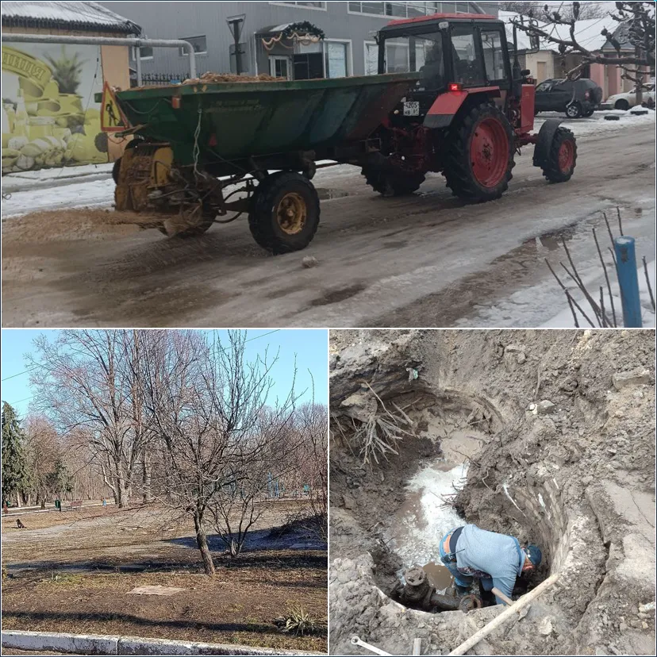

Кременная март 2026: как изменилась обстановка в городе
Дата:

С середины февраля до середины марта 2026 года обстановка в Кременной изменилась. Если во второй половине февраля ситуация чаще оценивалась как относительно спокойная, то к концу месяца основной темой стали беспилотники.
В конце февраля в городе начали фиксироваться перебои с электроснабжением. Параллельно появились атаки БПЛА по транспорту и увеличились риски при передвижении по городу и его окрестностям.
24 февраля в результате удара по Кременной погиб мирный житель, ещё один человек получил ранения. После этого вопрос безопасности стал одним из ключевых.
Беспилотники как основной фактор

В начале марта активность БПЛА заметно выросла. Беспилотники фиксировались как над самим городом, так и в прилегающих районах, в том числе со стороны Кременского леса.
В отдельных случаях дроны находились в небе длительное время. Это влияло на передвижение по городу. Даже короткие маршруты требовали осторожности, так как сохранялась вероятность появления БПЛА.
Удары по городской территории

В течение марта фиксировались удары по Кременной и повреждения инфраструктуры. В том числе отмечался удар по городской больнице.
Также зафиксированы повреждения жилых домов и отдельные пожары после прилётов. Подобные эпизоды стали появляться регулярно.
Городская жизнь

Несмотря на изменения обстановки, город продолжает функционировать. Работают основные службы, магазины остаются открытыми, жители занимаются повседневными делами.
Коммунальная ситуация остаётся рабочей, но нестабильной. В разные периоды фиксировались перебои с электричеством и отдельные проблемы с водой. При этом системы в целом продолжают функционировать.
Передвижение по городу и району стало более осторожным, прежде всего из-за активности беспилотников.
Итог
За последний месяц Кременная перешла от более спокойной обстановки к более сложной. Основное изменение связано с ростом активности БПЛА и увеличением количества ударов по городской территории.
При этом город продолжает жить и функционировать в условиях прифронтовой зоны. Базовая инфраструктура сохраняется, а повседневная жизнь продолжается, несмотря на изменения обстановки.